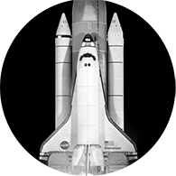

Trans-Neptunian Spaceway
Explorando Kuiper
A Via Espacial Trans-Netuniana leva turistas e empreendedores à nova região acessível do nosso sistema solar, além de Netuno, para aproveitar com a família uma viagem inovadora e inesquecível. Para você que é empreendedor oferecemos uma nova oportunidade de negócio, pelo qual cresce constantemente e possui um grande potencial econômico. A partir da parceria, a TNS possibilitará à humanidade conhecer uma área pouco explorada direcionada ao lazer.
